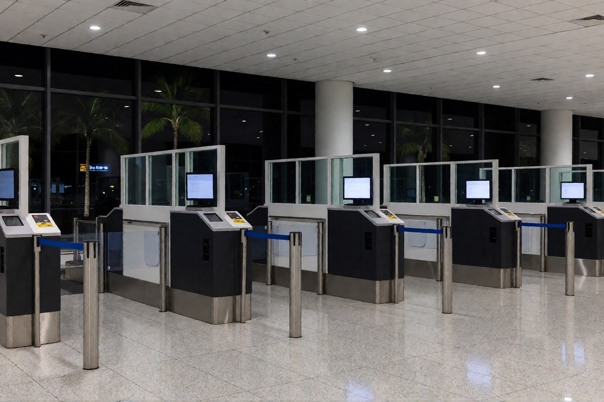

Geopolitica · 27 novembre 2026
Albanese bloccata in aeroporto in Costa Rica, la laurea le arriva in video

La relatrice dell'Onu è stata respinta all'ingresso per una «allerta internazionale» mai documentata. La Corte costituzionale ha vietato di allontanarla, la Farnesina chiede il suo ingresso, l'università si è scusata.
di Franco Zanghì
Francesca Albanese, la giurista italiana relatrice speciale dell'Onu per i territori palestinesi occupati, è stata respinta all'ingresso in Costa Rica. Era arrivata giovedì 26 novembre 2026 all'aeroporto Juan Santamaría, che serve San José, per ricevere il giorno dopo una laurea honoris causa dall'Università del Costa Rica. Ai controlli l'hanno fermata.
Non è un'espulsione: Albanese è stata trattenuta nell'area internazionale dello scalo e, come precisa la Farnesina, non è mai entrata formalmente nel territorio costaricano. Le è stato trattenuto il passaporto diplomatico.
L'accusa, senza le prove
Il motivo lo ha spiegato in un video sui social Omer Badilla Toledo, viceministro dell'Interno e direttore generale dell'immigrazione: Albanese «è oggetto di un'allerta internazionale per legami con atti terroristici». Quando è in gioco la sicurezza nazionale, ha aggiunto, le autorità applicano alla lettera quello che prevede l'ordinamento.
Da dove arrivi quell'allerta, chi l'abbia emessa e su quali fatti si basi, le autorità di San José non l'hanno spiegato, e non hanno mostrato alcun documento.
Un punto va detto con chiarezza, perché viene spesso confuso. Albanese è sotto sanzioni degli Stati Uniti, ma quelle sanzioni, decise il 9 luglio 2025 in base a un ordine esecutivo del febbraio dello stesso anno, riguardano i suoi interventi presso la Corte penale internazionale: non appartengono a un programma antiterrorismo. L'equazione fra le sanzioni americane e un'allerta per terrorismo non regge.
Le sue parole
«È una vergogna», ha scritto lei su X dall'aeroporto. Al Semanario Universidad ha detto di non credere che la decisione sia costaricana e si è chiesta se il Costa Rica sia un Paese sovrano, ipotizzando senza riscontri un ruolo degli Stati Uniti. Ha raccontato di non essersi mai sentita così umiliata, ha rifiutato il volo di rientro per Parigi e ha chiesto di proseguire per il Messico.
Dice di aver passato la notte in aeroporto senza poter dormire né lavarsi e senza accesso ai propri effetti personali, e che come posto per dormire le è stata indicata una cella. Badilla sostiene che non fosse né arrestata né detenuta, solo in attesa di ripartire.
Il giudice, la Farnesina, l'Onu
La sera del 26 novembre la Sala Constitucional, la corte costituzionale costaricana, ha accolto in via cautelare un ricorso di habeas corpus: le autorità non possono allontanarla contro la sua volontà fino alla decisione nel merito, mentre resta possibile una partenza volontaria. I vertici dell'immigrazione devono presentare una relazione giurata entro ventiquattro ore.
Il 27 novembre il ministero degli Esteri italiano ha reso noto che l'ambasciatrice d'Italia a San José è in contatto con Albanese, che un funzionario consolare è stato mandato sul posto e che le autorità locali sono state sollecitate più volte a consentirne l'ingresso. L'Alto commissario dell'Onu per i diritti umani, Volker Türk, si è detto profondamente preoccupato e ha chiesto alle autorità di riconsiderare la decisione.
La laurea, intanto, le è arrivata lo stesso: venerdì mattina il Consiglio universitario dell'Università del Costa Rica ha tenuto la seduta straordinaria con Albanese collegata in videoconferenza dall'aeroporto, una sedia vuota al tavolo e il diploma ritirato da una sua assistente. Il rettore Carlos Araya Leandro ha parlato di «un giorno oscuro» per il Paese e si è scusato pubblicamente con lei.
In Costa Rica la decisione è contestata da deputati di maggioranza e di opposizione. L'ambasciatore di Israele all'Onu, Danny Danon, ha invece applaudito il provvedimento: chi usa il mandato dell'Onu per diffondere una propaganda ignobile, ha scritto, deve risponderne.
Come la vedo io
Le posizioni di Francesca Albanese su Israele le ho trovate spesso eccessive, e lo penso ancora. Ma qui la questione è un'altra. Una cittadina italiana viene accusata da un governo straniero, davanti al mondo, di legami con il terrorismo, senza che nessuno mostri una prova. O le prove ci sono, e allora si mettono sul tavolo, o non ci sono, e allora quell'accusa diventa un'etichetta usata come un'arma. Sarebbe giusto che la Farnesina chiedesse a San José da dove arriva quell'allerta: non per difendere le idee di Albanese, ma un principio che vale per ogni italiano.
Fonti
- Il Post, «Francesca Albanese è bloccata in un aeroporto in Costa Rica», 27 novembre 2026
- Ministero degli Esteri, «Costa Rica: Francesca Albanese assistita da Ambasciata d'Italia, chiesto suo ingresso nel Paese», 27 novembre 2026
- Il Fatto Quotidiano, «Albanese respinta dal Costa Rica, l'Onu: preoccupati, le autorità la lascino entrare», 27 novembre 2026
- Delfino.cr, «Director de Migración atribuye rechazo de Francesca Albanese a supuesta alerta por vínculos con actos terroristas», 27 novembre 2026
- Semanario Universidad, «Francesca Albanese cuestiona si negarle el ingreso al país fue decisión del gobierno de EE. UU.», 26 novembre 2026
- Infobae Costa Rica, «Francesca Albanese recibe doctorado de la UCR a través de videoconferencia desde el aeropuerto», 27 novembre 2026
- Teletica, «Sala Constitucional frena salida del país de relatora especial de ONU sobre Palestina», 26 novembre 2026
- Infobae/EFE, «Diputados de Costa Rica rechazan veto a relatora de ONU Albanese por alerta terrorista», 27 novembre 2026
- Open, «Il Costa Rica nega l'ingresso a Francesca Albanese», 27 novembre 2026
Situazione in evoluzione alla data di pubblicazione: nelle fonti lette Francesca Albanese risulta ancora nell'area internazionale dell'aeroporto Juan Santamaría, e non risulta alcuna dichiarazione della presidenza costaricana. Come relatrice speciale è un'esperta indipendente nominata dal Consiglio dei diritti umani: parla a titolo personale e non rappresenta le Nazioni Unite. Sulla carica di Omer Badilla le fonti non coincidono, e qui si riporta quella più completa; una testata italiana colloca il respingimento a mercoledì, mentre le fonti costaricane indicano giovedì 26.